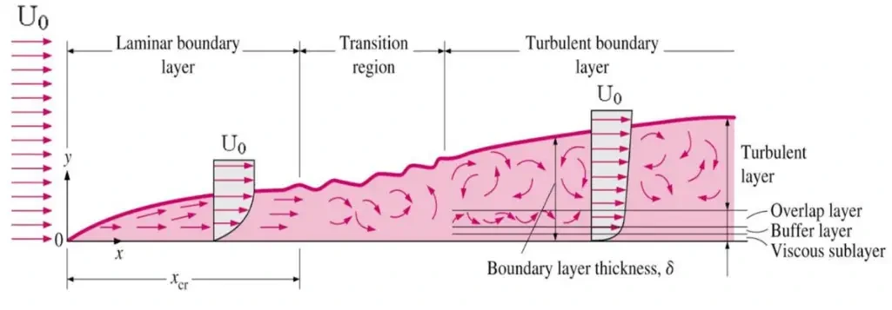
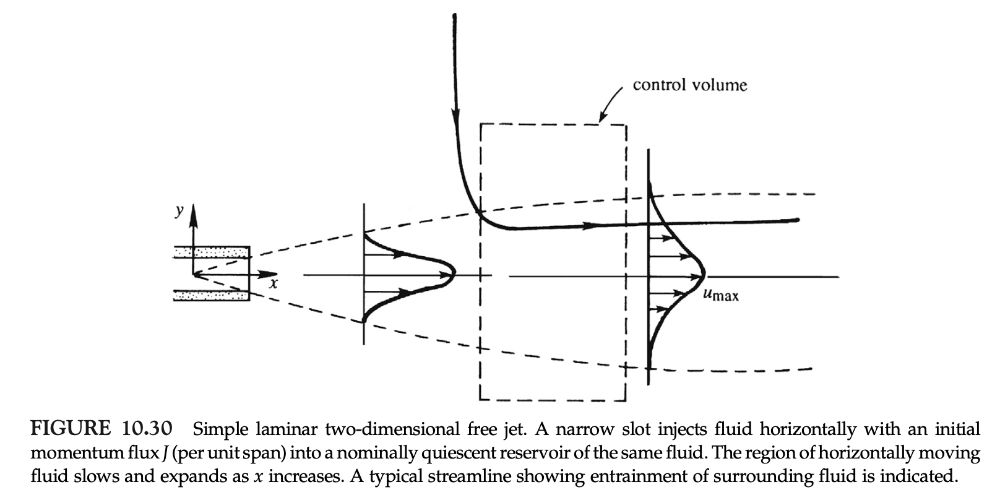
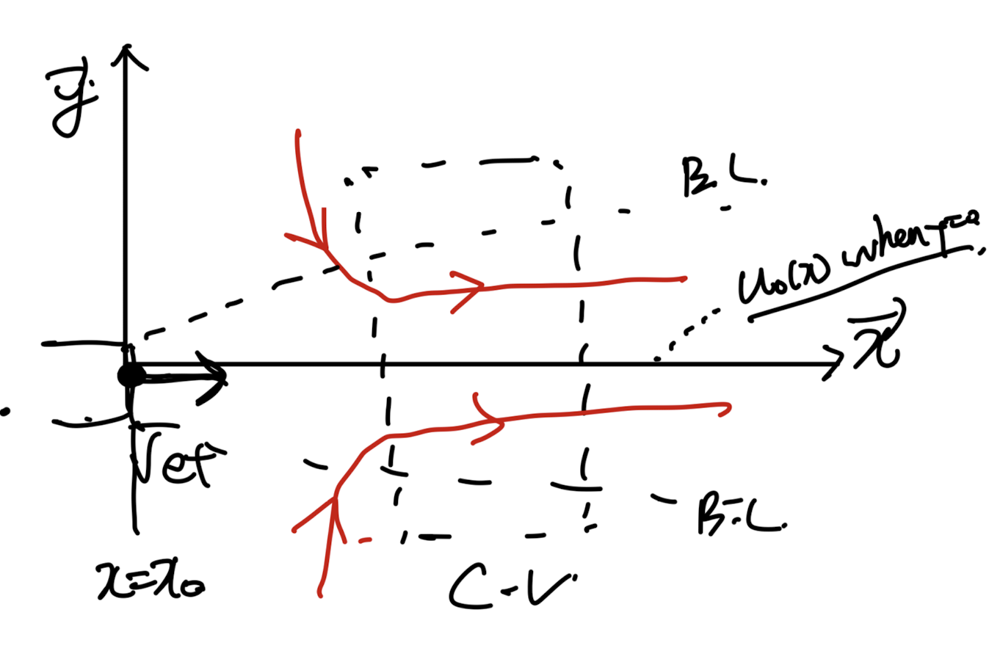
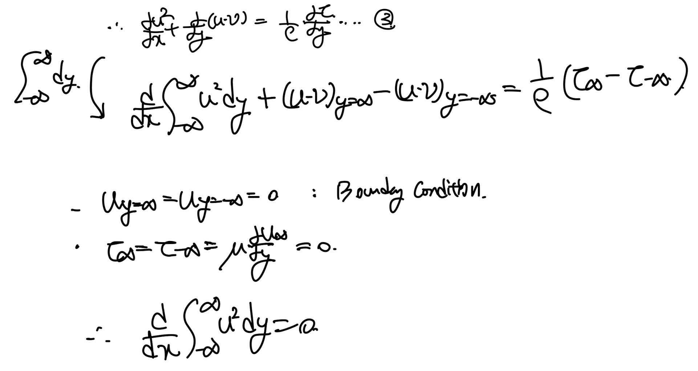
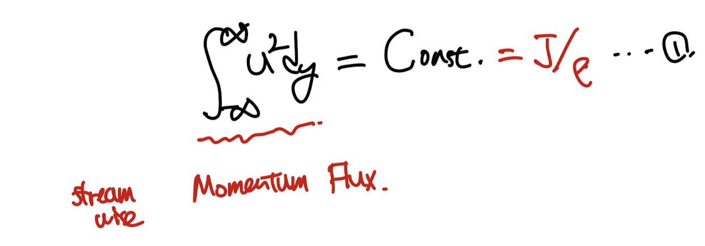
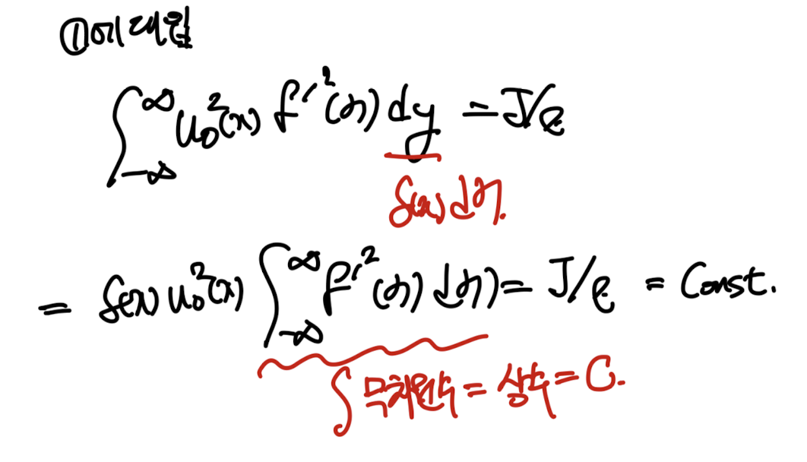
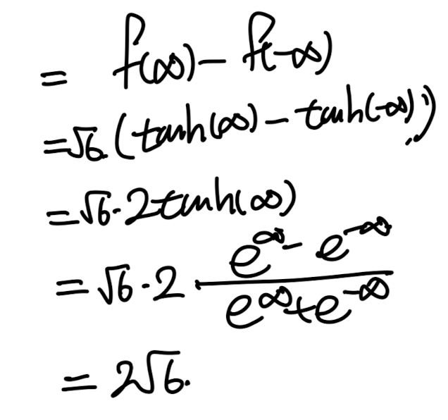

Boundary layer
part1,2,3
(이전 블로그)
들을 돌이켜 보면,
결국에는,
Boundary layer eqution
을 시작으로,
어떠한 geometry에서,
exact solution
or experiment parameter를 이용한 solution
을 유도해왔다.
근본이 되었던
Boundary layer equation (by Prandtl)을
다시 한번 살펴보자.

위식 성립에는 아주 중요한 가정이 있었다.
바로 thickness가 굉장히 작다는 것이다.

boundary layer on the plate(Laminar to Turbulent)
이를 다시 해석해보면,
굉장히 작은 thin layer가 존재하고,
그 안에서만 vorticity가 존재.
layer밖에서는 Free stream Velocity(Ue)
(일정하지 않아도 특정규칙을 따름)
인 경우에는 Boundary layer equation이
성립한다는 것이다.
(Naviers stokes Eq + thin thickness assumption
-> boundary layer equation)
이기 때문에.
위 조건을 만족하는 flow에는
지금부터 살펴볼, Jets, Far wake, Free-shear layer w/ 2 different stream.
이 있다.
각각의 경우를 살펴보고,
boundary layer equation을 이용하여
해석해보자.
1. 2D jets.

위 상황에서 u방향의 속도가 dominant 하고 밑의 가정을해주면,
boundary layer equation을 적용할 수 있다.

이제 다시 상황을 자세하게 이해해보면,
Boundary layer안에서 u = u(y)
즉 y방향으로 u가 달라진다.
그리고 boundary layer밖의
Free stream Velocity (Ue) = 0 인 상황이다.

Boundary condition은 다음과 같다.

이제, Boundary layer Equation을 적용시키면 다음과 같다.

Karman Integral relation에서 했던 방식으로
무한급수 범위로 적분시켜주자.

여기서, 우리는 물리적의미 - Momentum flux가
constant 하다는 것을 발견하였다(1번식)
(J: momentum flux, ρ: density)

이제 Similarity solution방식으로 해를 구해보자.
(주의할점, u_0: y=0에서의 속도이다)

위에서 새롭게 정의한 similairty function을
1번식 dy에 대입해준다.

여기서 무차원수의 적분 = 상수이므로, 일단 C로 치환하자.
이후 정리를 하면, 최종적으로 우리는 u_0(x),
δ(x)를
J,C,x에 관한 식으로 나타낼 수 있다
(추후에 쓰임)

방금 정리한
u_0(x),
δ(x)를
similairty variable, steam function에 대입해주자.

이제 모두 변화를 완료하였으니,
boundary layer equation에 전부 치환한 것들을 대입해주면 3번의
ODE가 나오게된다.

3번식을 풀기 전에
boundary condition을 정리하고 넘어가자.
새로운 함수로 치환을 했기 때문에.

boundary conditions for f
이제 위 BC을 가지고 두번 적분을 통해
3번 ODE를 풀자.

최종적으로, tanh 로 함수를 치환해주어야 한다.

위의 BC 5를 적용시키면 C1 = 0. 이 도출된다.

ODE를 풀어
similarity function f를
유도하였다.
이제 f를 이용하여 속도장을 계산해보자.
(지금까지 유도한 항들)

f를 구한대로 대입해주자.

한편 f를 구했으므로 적분항 C도 유도할 수 있다.

뿐만아니라, MASS FLUX PER UNIT SPAN도 유도 가능하다.

여기서 빨간생 밑줄친 부분은 다음과 같이 상수이다.

다시 대입해주면,

이후 u0(x)를 우리가 아는 식을 대입해주자.

이번 포스트를 요약해보면,
Boundary layer equation을
2D Jet에도 몇가지 가정을 통해서
적용시킬 수 있음을 확인하였고
이를 통해서 analytical solution
속도장, mass flux를 유도하였다